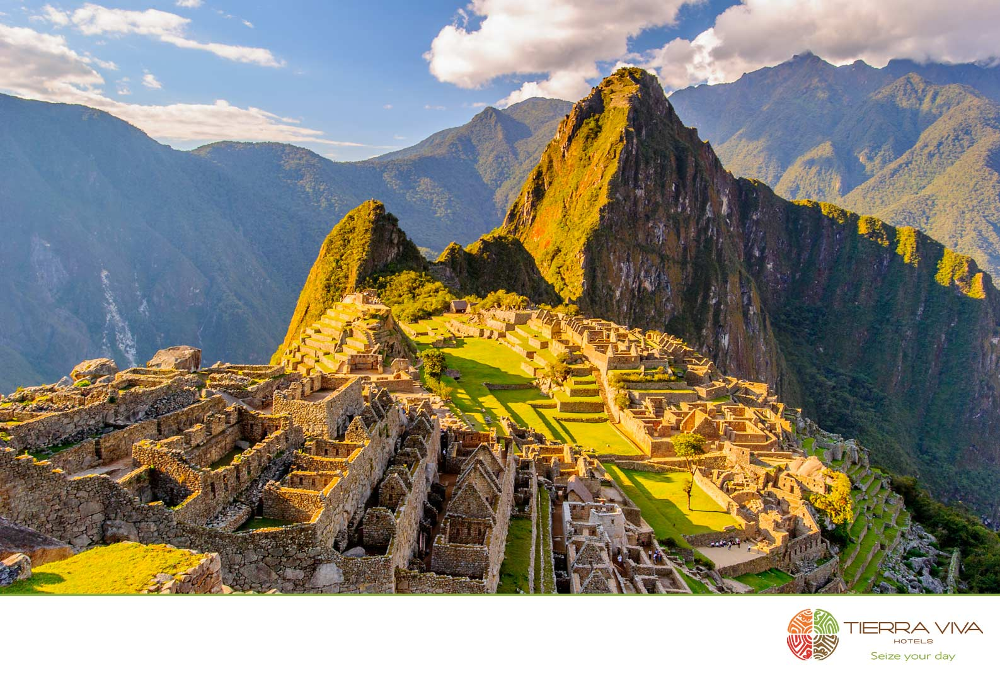

Machu Picchu, site of ancient Inca ruins located about 50 miles (80 km) northwest of Cuzco, Peru, in the Cordillera de Vilcabamba of the Andes Mountains. It is perched above the Urubamba River valley in a narrow saddle between two sharp peaks—Machu Picchu (“Old Peak”) and Huayna Picchu (“New Peak”)—at an elevation of 7,710 feet (2,350 meters). One of the few major pre-Columbian ruins found nearly intact, Machu Picchu was designated a UNESCO World Heritage site in 1983.
Although the site escaped detection by Spanish explorers, it may have been visited by the German adventurer Augusto Berns in 1867. However, Machu Picchu’s existence was not widely known in the West until it was “discovered” in 1911 by the Yale University professor Hiram Bingham, who was led to the site by Melchor Arteaga, a local Quechua-speaking resident. Bingham had been seeking Vilcabamba (Vilcapampa), the “lost city of the Incas,” from which the last Inca rulers led a rebellion against Spanish rule until 1572. He cited evidence from his 1912 excavations at Machu Picchu, which were sponsored by Yale University and the National Geographic Society, in his labeling of the site as Vilcabamba; however, that interpretation is no longer widely accepted. (Nevertheless, many sources still follow Bingham’s precedent and erroneously label Machu Picchu as the “lost city of the Incas.”)
